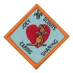
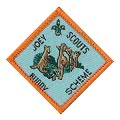
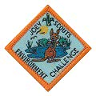
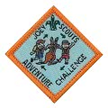
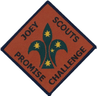
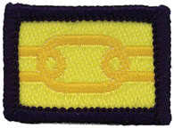

Joey Participation Scheme
The Participation Scheme includes five badges. Each of the badges are usually done by the whole Mob together. Some badges have elements that families can do together with their Joey Scout. In addition to the specific aspects of each badge, these activities develop the Joey Scouts' social awareness and spirit of teamwork. The participation scheme has an accent on cooperative, active learning.

Caring and Sharing Activity
Each Mob plans and runs programs for one month that focus on caring and sharing. As a highlight, the Mob does a special deed for the local community.

Buddy Scheme
Joey Scout Mobs visit each other, share activities and have great fun. The Mob Buddy Scheme aims at building a rapport and friendship between different Mobs.

Environment Challenge
The Mob undertakes four simple Environmental Challenges (pdf) that aim to develop an appreciation of and respect for the natural environment, to gain knowledge of Australian plants and animals, and to develop a sense of responsibility in behaviour and action.

Adventure Challenge
The Adventure Challenge is designed to broaden each Joey Scout's life experiences through visiting places to which the Mob doesn't usually go. Some of the adventures could include a trip to the beach or a creek, a bushwalk, visiting a museum or a farm, the possibilities are endless!

The Promise Challenge
The Promise Challenge (pdf) is the major Challenge for the Joey Scout Section and has some individual elements as well as activities to do with the Mob. This is generally attempted by the older Joey Scouts. The aim of this challenge is to allow Joey Scouts to gain a greater understanding of the Scout Promise and Law, to learn about Scouting's Founder, Lord Robert Baden-Powell, and to discover the history of Scouting. The challenge requires the Joey Scout to complete certain elements, such as research and discussion with their parents and Leaders, away from the Mob meetings. The Joey will also be required to give a presentation to the Mob on completion of the task.

Cub Link Badge
The Link badge (pdf) is the last you will do before you move up into Cubs.
Other Badges
Camper Award Badge


The Camper Award Badge depicts the total number of nights spent camping while on approved Scouting activities.
Walkabout Award Badge


The Walkabout Award Badge is earned for the total kilometres travelled under human power through a youth member's time in Scouting.